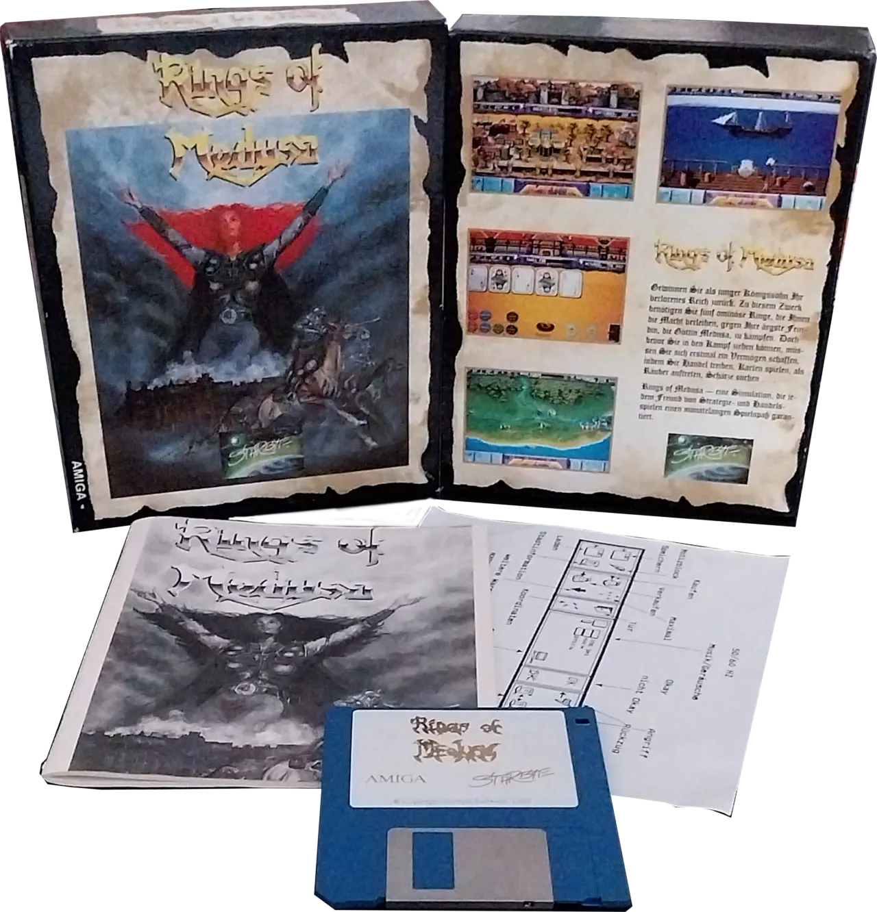
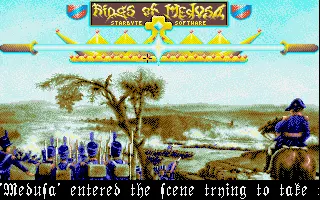
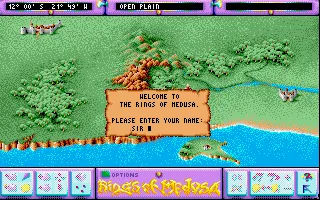
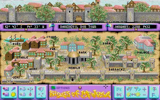

Entwickler: Starbyte Software
Publisher: Starbyte Software
Genre: Strategie / Wirtschaft / Fantasy
Plattform: Amiga, DOS, Atari ST
Erscheinungsjahr: 1989
Im Fantasyreich Morenia versucht der Spieler, den Fluch der Medusa zu brechen. Dazu gilt es, Rohstoffe zu fördern, Städte auszubauen, Handel zu betreiben, Armeen aufzustellen und sich gegen zahlreiche Gegner zu behaupten. Die Mischung aus Wirtschaftssimulation, Strategie und Fantasy macht Rings of Medusa bis heute zu einem außergewöhnlichen Genre-Mix.




Rings of Medusa bietet eine faszinierende Mischung aus Wirtschaftssimulation, Strategie und Fantasy. Gerade diese ungewöhnliche Kombination sorgt dafür, dass sich das Spiel auch Jahrzehnte nach seiner Veröffentlichung noch frisch und abwechslungsreich anfühlt.